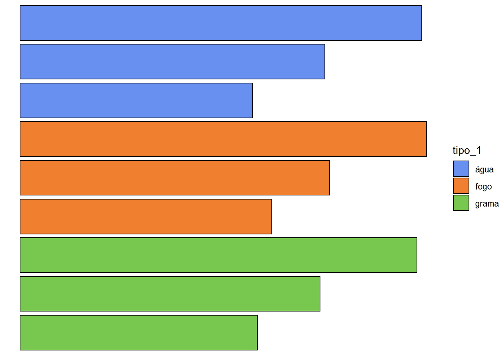
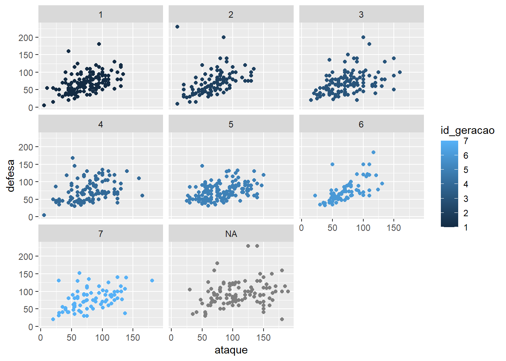

install.packages(c("dplyr", "ggplot2",
"ggpath", "pokemon"))Introdução ao ggplot2
ggplot2
dataviz
Iniciando na visualização de dados
Pacotes utilizados
Nessa aula vamos utilizar os seguintes pacotes:
dplyrpara manipulação de dadosggplot2para criar gráficosggpathpara plotar imagens de uma forma bem mais fácilpokemonpara obter a tabela de pokemons em pt-br
Para instalar os pacotes, utilizamos o seguinte script:
Agora que temos os pacotes instalados, é só carregá-los.
Os dados
Para criar nossos gráficos, precisamos de um conjunto de dados.
pokemon_df <- pokemon::pokemon_ptbrGráficos
Gráficos com R base
Podemos criar gráficos com o R base, que é bem simples mas permite visualizações rápidas.
Podemos criar gráficos de dispersão
plot(altura ~ peso, data = pokemon_df)O problema começa quando queremos deixar esses gráficos mais bonitos
plot(altura ~ peso, data = pokemon_df,
main = "Título",
xlab = "Massa (kg)", ylab = "Altura (m)",
pch = 19, frame = FALSE)
abline(lm(altura ~ peso, data = pokemon_df), col = "blue")Isso é confuso e eu acho muito difícil de deixar qualquer gráfico assim mais bonito.
Gráficos com ggplot2
Mas agora vamos conhecer o pacote ggplot2. Esse pacote foi a tese do Hadley Wickham, atual cientista-chefe da RStudio/Posit.
A mágica aqui é que esse pacote incorporou a gramática de gráficos (por isso o gg), que trouxe vários fundamentos a serem seguidos. Um deles é a criação de gráficos por camadas, como se fosse uma pintura!
 {width = 50%}
{width = 50%}
Esse pacote já está incluso no tidyverse e segue o mesmo princípio.
Se rodarmos só um ggplot(), teremos uma tela em branco.
ggplot()
Agora temos que adicionar o nosso dataset e quais serão nossos eixos.
Sempre que estivermos falando de uma variável do nosso dataset, temos que colocar dentro do argumento aes(), que significa aesthetics.

Inclusive, como o ggplot2 funciona em camadas, podemos usar da seguinte forma:

Como o ggplot2 faz parte do tidyverse, podemos falar para o R no imperativo: “Pegue o dataset pokemon_df e então crie o ggplot…”. O bom dessa abordagem é que, como o ggplot já sabe o dataset de antemão, ele nos ajuda a selecionar as variáveis (aperte tab antes de escrever as variáveis).

Agora temos nosso gráfico com os eixos delimitados, e podemos adicionar as camadas que quisermos. O princípio do ggplot é parecido com o pipe, onde as informações são passadas diretamente para a camada abaixo, assim não precisamos adicionar os dados novamente.
Geometrias
As geometrias são funções que começam por geom_*. Existem muitas e podemos ter uma ajudinha com a colinha do ggplot2.
Primeiro, vamos criar um gráfico de dispersão
pokemon_df %>%
ggplot(aes(x = peso,
y = altura))+
geom_point()
Para adicionar mais uma camada de geometria, é só adicionar mais uma camada nessa pintura. Vamos adicionar uma linha de tendência com a função geom_smooth().
pokemon_df %>%
ggplot(aes(x = peso,
y = altura))+
geom_point()+
geom_smooth()`geom_smooth()` using method = 'loess' and formula = 'y ~ x'
#podemos adicionar uma linha de tendência linear com o method = "lm"Aqui podemos perceber como o ggplot2 funciona igual a uma pintura. Como o geom_smooth() foi chamado depois do geom_point(), ele é plotado por cima.
Vamos ver o mesmo exemplo mas invertendo essas geometrias.
pokemon_df %>%
ggplot(aes(x = peso,
y = altura))+
geom_smooth()+
geom_point()`geom_smooth()` using method = 'loess' and formula = 'y ~ x'#podemos adicionar uma linha de tendência linear com o method = "lm"Vamos fazer um boxplot (utilizando a geometria geom_boxplot) do tipo do pokemon por altura
pokemon_df %>%
ggplot(aes(x = tipo_1, y = peso))+
geom_boxplot()Agora vamos fazer um gráfico de colunas (utilizando a geometria geom_col() do peso dos pokemons.
Mas nós temos muitos dados, vamos selecionar só alguns para plotar.
Vamos testar!

Podemos inverter os eixos, é só mudar. Inclusive com textos grandes, é mais indicado eles ficarem no eixo y.

Os pokemons não estão na ordem que gostaríamos (como no dataset), estão em ordem alfabética. Então temos que ordená-los pela id, mas para serem ordenados precisamos considerá-los como fatores.
Vamos ver se funcionou usando a função glimpse() (significa espiadinha do dplyr). Perceba a classe de cada variável entre <...>
glimpse(iniciais2)Rows: 9
Columns: 22
$ id <dbl> 1, 2, 3, 4, 5, 6, 7, 8, 9
$ pokemon <fct> bulbasaur, ivysaur, venusaur, charmander, charmeleon, …
$ id_especie <dbl> 1, 2, 3, 4, 5, 6, 7, 8, 9
$ altura <dbl> 0.07, 0.10, 0.20, 0.06, 0.11, 0.17, 0.05, 0.10, 0.16
$ peso <dbl> 0.69, 1.30, 10.00, 0.85, 1.90, 9.05, 0.90, 2.25, 8.55
$ exp_base <dbl> 64, 142, 236, 62, 142, 240, 63, 142, 239
$ tipo_1 <chr> "grama", "grama", "grama", "fogo", "fogo", "fogo", "ág…
$ tipo_2 <chr> "venenoso", "venenoso", "venenoso", NA, NA, "voador", …
$ hp <dbl> 45, 60, 80, 39, 58, 78, 44, 59, 79
$ ataque <dbl> 49, 62, 82, 52, 64, 84, 48, 63, 83
$ defesa <dbl> 49, 63, 83, 43, 58, 78, 65, 80, 100
$ ataque_especial <dbl> 65, 80, 100, 60, 80, 109, 50, 65, 85
$ defesa_especial <dbl> 65, 80, 100, 50, 65, 85, 64, 80, 105
$ velocidade <dbl> 45, 60, 80, 65, 80, 100, 43, 58, 78
$ cor_1 <chr> "#78C850", "#78C850", "#78C850", "#F08030", "#F08030",…
$ cor_2 <chr> "#A040A0", "#A040A0", "#A040A0", NA, NA, "#A890F0", NA…
$ cor_final <chr> "#81A763", "#81A763", "#81A763", NA, NA, "#DE835E", NA…
$ grupo_ovo_1 <chr> "monster", "monster", "monster", "monster", "monster",…
$ grupo_ovo_2 <chr> "plant", "plant", "plant", "dragon", "dragon", "dragon…
$ url_icone <chr> "//archives.bulbagarden.net/media/upload/7/7b/001MS6.p…
$ url_imagem <chr> "https://raw.githubusercontent.com/HybridShivam/Pokemo…
$ id_geracao <dbl> 1, 1, 1, 1, 1, 1, 1, 1, 1Olha como ficou ordenado agora!
Estão faltando cores nesses gráficos!
Agora vamos utilizar os argumentos color e fill. Quando a forma for sólida, utilizamos apenas o color, se tiver contorno e preenchimento, utilizamos o colore fill, respectivamente.
Podemos colorir de acordo com qualquer variável, nesse caso vamos colorir por tipo!
Veja que podemos determinar a variável na função ggplot() e ela servirá para todas as seguintes. Se quisermos aplicar a uma camada apenas, colocamos apenas nela.

Agora podemos adicionar o contorno. Como ele não é uma variável (é uma cor fixa), não precisa ir dentro do aes()

Labels
Todo gráfico pode ter título, subtítulo, titulo dos eixos, etc.
Tudo isso pode ser determinado utilizando a função labs() dentro do ggplot. Perceba que a legenda é criada de acordo com a variável fill, por isso o título da legenda seguirá essa variável.

Escalas
E se quisermos editar as escalas? Nesse caso vamos utilizar o conjunto de funções scale_*.
Vamos editar o eixo X. As quebras estão de 20 em 20, vamos colocar de 10 em 10. Como o eixo x é contínuo, vamos usar a função scale_x_continuous(). O argumento breaks nos ajuda com essa tarefa!
iniciais2 %>%
ggplot(aes(x = ataque, y = pokemon, fill = tipo_1))+
geom_col(color = "black")+
scale_x_continuous(breaks = seq(0,200,10))As cores também podem ser definidas pela função scale_*. Essas cores não são exatamente as que queremos, podemos definir manualmente usando a função scale_fill_manual().
Como as cores estão definidas de acordo com o tipo, vamos usar elas como base. O próprio dataset traz as cores para cada tipo. Para o tipo fogo usaremos a cor #F08030◉, para o tipo grama usaremos a cor #78C850◉ e para o tipo água usaremos a cor #6890F0◉.
iniciais2 %>%
ggplot(aes(x = ataque, y = pokemon, fill = tipo_1))+
geom_col(color = "black")+
scale_fill_manual(
values = c(
"fogo" = "#F08030",
"grama" = "#78C850",
"água" = "#6890F0"
)
)
Além de determinar as cores, também podemos determinar as labels que cada cor terá na legenda. Vamos fazer isso dentro da função scale também, mas com o argumento labels.

Temas
Mas esses gráficos não estão tão bonitos ainda, podemos editar qualquer coisa dos gráficos, desde a cor do fundo até a fonte.
O ggplot2 já tem alguns temas pré definidos. Vamos testar
Essa é a theme_bw()
iniciais2 %>%
ggplot(aes(x = ataque, y = pokemon, fill = tipo_1))+
geom_col(color = "black")+
scale_fill_manual(
values = c(
"fogo" = "#F08030",
"grama" = "#78C850",
"água" = "#6890F0"
)
)+
theme_bw()
Eu gosto bastante da theme_classic()
iniciais2 %>%
ggplot(aes(x = ataque, y = pokemon, fill = tipo_1))+
geom_col(color = "black")+
scale_fill_manual(
values = c(
"fogo" = "#F08030",
"grama" = "#78C850",
"água" = "#6890F0"
)
)+
theme_classic()
O theme_minimal() também é muito utilizado.
iniciais2 %>%
ggplot(aes(x = ataque, y = pokemon, fill = tipo_1))+
geom_col(color = "black")+
scale_fill_manual(
values = c(
"fogo" = "#F08030",
"grama" = "#78C850",
"água" = "#6890F0"
)
)+
theme_minimal()
O tema theme_void() mantém apenas as geometrias do gráfico gerado.
iniciais2 %>%
ggplot(aes(x = ataque, y = pokemon, fill = tipo_1))+
geom_col(color = "black")+
scale_fill_manual(
values = c(
"fogo" = "#F08030",
"grama" = "#78C850",
"água" = "#6890F0"
)
)+
theme_void()
Mas podemos editar qualquer coisa dentro do tema escolhido também. Essas funções são apenas configuração pré-determinadas.
A maioria das configurações podem ser vistas neste site. Para mudar as configurações do tema, adicionamos os argumentos na função theme()
Vamos eliminar o nome dos eixos
iniciais2 %>%
ggplot(aes(x = ataque, y = pokemon, fill = tipo_1))+
geom_col(color = "black")+
scale_fill_manual(
values = c(
"fogo" = "#F08030",
"grama" = "#78C850",
"água" = "#6890F0"
)
)+
theme(
axis.title = element_blank()
)
Ou mudar o fundo do gráfico. Perceba que temos plot (o gráfico total) e panel (apenas o painel entre os eixos)
iniciais2 %>%
ggplot(aes(x = ataque, y = pokemon, fill = tipo_1))+
geom_col(color = "black")+
scale_fill_manual(
values = c(
"fogo" = "#F08030",
"grama" = "#78C850",
"água" = "#6890F0"
)
)+
theme(
plot.background = element_rect(fill = "pink"),
panel.background = element_rect(fill = "yellow")
)
Vamos mudar as linhas de grade!
iniciais2 %>%
ggplot(aes(x = ataque, y = pokemon, fill = tipo_1))+
geom_col(color = "black")+
scale_fill_manual(
values = c(
"fogo" = "#F08030",
"grama" = "#78C850",
"água" = "#6890F0"
)
)+
theme(
plot.background = element_rect(fill = "pink"),
panel.background = element_rect(fill = "yellow",
color = "blue"),
panel.grid.major = element_line(color = "green"),
panel.grid.major.x = element_line(linetype = "dashed"),
panel.grid.minor.x = element_line(color = "black")
)
Meu Deus! O gráfico não ficou bonito, mas ficou didático! (Mas nunca faça algo assim de verdade, por favor)
Facetas
Muitas vezes temos muitas informações para mostrar em apenas um gráfico. Para isso podemos utilizar a ideia de pequenos múltiplos com a função facet_wrap()!
pokemon_df %>%
ggplot(aes(x = ataque,
y = defesa,
color = id_geracao))+
geom_point()+
facet_wrap(.~id_geracao)
Nesse caso o ggplot interpretou a coluna id_geracao como numérica contínua. Mas nesse caso cada geração é independente de outra. Podemos dizer para o ggplot2 interpretas essa variável como fator.
pokemon_df %>%
ggplot(aes(x = ataque,
y = defesa,
color = factor(id_geracao)))+
geom_point()+
facet_wrap(.~factor(id_geracao))
Podemos usar as facetas com outros dados também.
pokemon_df %>%
ggplot(aes(x = ataque,
y = defesa,
color = tipo_1))+
geom_point()+
facet_wrap(.~tipo_1)Plotar imagens
Se quisermos colocar figuras nos nosso gráficos, a melhor indicação é usar o pacote ggpath. Essa é melhor forma de plotar imagens!
Para isso vamos utilizar a função geom_from_path(). Só precisamos informar qual é a coluna com o caminho para a figura.
Uma sugestão é colocar o argumento da largura width como 0.1 pois as figuras podem ficar gigantes!
library(ggpath)
iniciais2 %>%
ggplot(aes(x = ataque, y = pokemon, fill = tipo_1))+
geom_col(color = "black")+
geom_from_path(aes(path = url_imagem),
width = 0.1)+
scale_fill_manual(
values = c(
"fogo" = "#F08030",
"grama" = "#78C850",
"água" = "#6890F0"
)
)
Gráfico finalizado
Com comentários!
iniciais2 %>%
ggplot(aes(x = ataque, y = pokemon, fill = tipo_1))+
#adiciona colunas
geom_col(color = "black",
width = 0.5)+
#adiciona nomes
geom_text(aes(label = pokemon,
color = tipo_1),
x = 1,
hjust = 0,
nudge_y = 0.45,
fontface = "bold")+
#adiciona figuras
geom_from_path(aes(path = url_imagem),
width = 0.1,
hjust = 0)+
#adiciona linha vertical
geom_vline(xintercept = 0)+
#expande eixo x
scale_x_continuous(
expand = expansion(mult = c(0,0.1))
)+
#edita cores (vai afetar o texto que usa color)
scale_color_manual(
values = c(
"fogo" = "#F08030",
"grama" = "#78C850",
"água" = "#6890F0"
)
)+
#edita cores (vai afetar a coluna que usa fill)
scale_fill_manual(
values = c(
"fogo" = "#F08030",
"grama" = "#78C850",
"água" = "#6890F0"
)
)+
#edita labs
labs(
x = "Ataque",
caption = "Bruno Mioto - @BrunoHMioto"
)+
#usa tema inicial
theme_classic()+
#edita tema
theme(
#remover toda a legenda
legend.position = "none",
#remove título do eixo y
axis.title.y = element_blank(),
#remove texto do eixo y
axis.text.y = element_blank(),
#remove ticks
axis.ticks = element_blank(),
#remove eixos
axis.line = element_blank(),
#adiciona linha de grade - major
panel.grid.major.x = element_line(),
#adiciona linha de grade pontilhada - minor
panel.grid.minor.x = element_line(linetype = "dashed"),
#aumenta as margens do gráfico
plot.margin = margin(10,10,10,10,"pt"),
#muda a cor do fundo do gráfico
plot.background = element_rect(fill = "#f1f1f1", color = NA),
#muda a cor do fundo do painel
panel.background = element_rect(fill = "#f1f1f1", color = NA),
)+
#não corta as imagens que saem do painel
coord_cartesian(
clip = "off"
)
#salva o gráfico
#ggsave("figures/grafico_final.png", width = 8, height = 6)